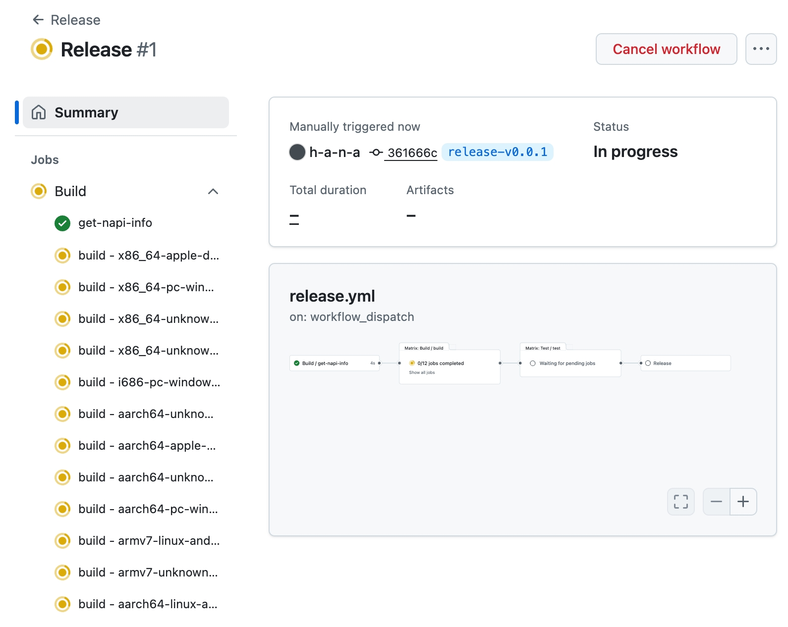

The Rspack Rust Book
Rspack is a high performance JavaScript bundler written in Rust. It offers strong compatibility with the webpack ecosystem, allowing for seamless replacement of webpack, and provides lightning fast build speeds.
Sections
Rspack Custom Binding - Getting Started
In this section, we will learn how to create a custom binding for Rspack.
Getting Started
Welcome to Rspack Custom Binding! This guide will help you get started with creating your own native Node.js addon for Rspack.
⚠️ Experimental Stage: Rspack Custom Binding is currently in experimental stage. Rust APIs are likely to change in the future as the ecosystem evolves. JavaScript APIs follow semantic versioning (semver), but Rust crate versions do not follow semver due to the version mapping strategy.
Prerequisites
Before diving into Rspack Custom Binding, we recommend:
- Read the Rationale - Understand why you might want to use custom bindings and how they work
- Basic Rust Knowledge - Familiarity with Rust programming language
- Node.js Experience - Understanding of Node.js addons and N-API concepts
If you're not familiar with writing Node.js addons and N-API in Rust, don't worry. We will cover the basics in this guide.
Next Steps
Once you understand the rationale and architecture, proceed to the Create From Template guide to set up your development environment.
Rationale of Rspack Custom Binding
Rspack is so fast because it's written in Rust, along with Rspack's internal built-in plugins and built-in loaders.
Most of the time, we assume you've been using the Rspack JavaScript API and writing Rspack JavaScript Plugins.
You might have heard there are some overheads when using the JavaScript API. The rumor is true!
Since Rspack is mostly written in Rust, providing the adaptation layer with the JavaScript API requires significant overhead. This overhead comes from:
- Passing values back and forth between Rust and JavaScript
- Type conversions between languages
- Memory allocation and deallocation
These factors create performance bottlenecks.
But have you ever wondered if there's a way to extend Rspack's functionality by writing native Rust code? A way that:
- Doesn't sacrifice performance
- Provides access to rich Rust APIs
- Avoids JavaScript-Rust overhead
The answer is yes. This is where Rspack Custom Binding comes in.
To get started with Rspack Custom Binding, you need to know the surface level of how Rspack binding works.
How Rspack Binding Works
If you are using @rspack/cli or @rspack/core without knowing what a custom binding is, you are using Rspack binding.
It's a simple architecture that allows you to extend Rspack's functionality by leveraging the Rspack JavaScript API. This works the same way you use the Webpack JavaScript API to extend Webpack.
Let's take a deep dive into the architecture. It contains 3 parts:
npm:@rspack/core: The JavaScript API layer of Rspack. Written in JavaScript.npm:@rspack/binding: The Node.js Addon of Rspack.crate:rspack_binding_api: The N-API glue layer of Rspack. Written in Rust.
flowchart TD
Core("npm:@rspack/core")
style Core stroke-width:0px,color:#FFDE59,fill:#545454
Core --> Binding("npm:@rspack/binding")
style Binding stroke-width:0px,color:#FFDE59,fill:#545454
Binding --> APIs("crate:rspack_binding_api")
style APIs stroke-width:0px,color:#FFDE59,fill:#545454
crate:rspack_binding_api
The N-API glue layer of Rspack.
This layer contains glue code that bridges the gap between N-API-compatible runtimes (typically Node.js) and Rust Core crates.
npm:@rspack/binding
The Node.js Addon of Rspack.
This layer performs two key functions:
- Links
crate:rspack_binding_api - Compiles it into a Node.js Addon (a
*.nodefile) with NAPI-RS
The functionalities that npm:@rspack/core provides are mostly exposed by the Node.js Addon in npm:@rspack/binding.
Note: If you've checked the code on npm, you'll notice it doesn't contain the *.node file.
This is because the *.node files are distributed by platform-specific packages:
@rspack/binding-darwin-arm64(for macOS ARM)@rspack/binding-linux-x64(for Linux x64)- And others for different platforms
Don't worry about this for now—we'll cover the details in the custom binding section.
npm:@rspack/core
The JavaScript API layer of Rspack.
The internals of npm:@rspack/core are written in JavaScript. It bridges the gap between the Node.js Addon in npm:@rspack/binding and the Rspack JavaScript API.
npm:@rspack/cli is a command line tool that uses npm:@rspack/core to build your project.
How Rspack Custom Binding Works
Let's use the diagram below to understand how a custom binding works. The diagram shows two states:
- "Before": The standard Rspack setup
- "After": The custom binding approach
Before State
Your project uses the default Rspack binding. This is created solely from crate:rspack_binding_api, the core glue layer between Rust and Node.js.
After State
You introduce your own native code. As the diagram shows, your User Customizations (like custom Rust plugins and loaders) are combined with the original crate:rspack_binding_api.
This combination produces a new, personalized Custom Binding with several benefits:
- Becomes your project's new Node.js addon
- Allows injecting high-performance, custom logic directly into Rspack's build process
- Eliminates JavaScript-Rust communication overhead for your custom code
Key Advantage
You can continue to use npm:@rspack/core with your custom binding. This approach provides:
- Native performance and customization: Your code runs at Rust speed
- No API rewriting needed: Keep using the existing JavaScript API layer
- Feature reuse: Access all features that
@rspack/coreprovides
We will cover how to integrate @rspack/core with a custom binding in a later section.
flowchart LR
subgraph Before ["_Before_"]
Original("crate:rspack_binding_api")
style Original stroke-width:0px,color:#FFDE59,fill:#545454
end
subgraph After ["_After_"]
Plugin("User Customizations:<br>- custom plugins<br>- custom loaders")
style Plugin stroke-width:0px,color:#AB7F45,fill:#FFE2B1
API("crate:rspack_binding_api")
style API stroke-width:0px,color:#FFDE59,fill:#545454
Plugin --> CustomBinding("Custom Binding = <br>crate:rspack_binding_api + User Customizations")
API --> CustomBinding
style CustomBinding stroke-width:0px,color:#AB7F45,fill:#FFE2B1
end
Before -.-> After
style Before stroke-dasharray: 5 5
style After stroke-dasharray: 5 5
Next Steps
Now you have a basic understanding of how Rspack Custom Binding works. Let's move on to the Create From Template guide to set up your development environment.
Create From Template
Creating Your Repository
Click the button below to create a new repository from the template:

Alternatively, visit the rspack-binding-template repository and click "Use this template".
Automatic Build
After creating your repository, the binding will automatically start building. Monitor the progress on the Actions page of your repository.
CI Workflow
The initial commit triggers a comprehensive workflow:
- Cargo Check - Rust code validation
- Cargo Clippy - Linting and best practices
- Build - Cross-platform compilation for:
- macOS (x86_64 and ARM64)
- Windows (x86_64, i686, and ARM64)
- Linux (x86_64 GNU/musl, ARM64 GNU/musl, ARMv7)
- Android (ARM64 and ARMv7)
- Test - Running tests on Ubuntu, macOS, and Windows
A successful run takes ~20 minutes and generates platform-specific binary artifacts. See an example workflow.
Note: You don't need to check "Include all branches" when creating from the template.
What You Get
The template provides two key packages that extend Rspack:
- New Core Package - Extends
@rspack/corewith your custom functionality - New Binding - Extends
@rspack/binding(the transitive dependency that@rspack/coreuses) with your Rust code
These become drop-in replacements for the standard Rspack packages in your projects.
Template Structure
The template includes these key components:
crates/binding/- Your Rust code that extends Rspack's functionalityexamples/- Ready-to-run examples showing how to use your custom bindinguse-plugin/- Demonstrates custom Rust plugin usageuse-loader/- Demonstrates custom Rust loader usage
lib/- JavaScript wrapper that becomes your new@rspack/corepackage- Configuration files - Essential setup for building and publishing:
Cargo.toml,package.json- Package definitionsrust-toolchain.toml,rustfmt.toml- Consistent Rust environmentpnpm-workspace.yaml- Monorepo workspace management
- Automation - Pre-configured tooling:
.github/- CI/CD workflows for cross-platform builds.cargo/- Rust build configuration.husky/- Git hooks for code quality
Tech Stack: Rust, JavaScript/TypeScript, Node.js, Cargo, pnpm, GitHub Actions
Next Steps
In this chapter, we learned how to create a new repository based on the template.
In the next chapter, we will learn how to set up the repository locally.
First Custom Binding
This chapter will guide you through creating your first custom Rspack binding, from initial setup to publishing on npm.
You'll learn to build a complete MyBannerPlugin that adds custom banners to generated JavaScript files, demonstrating the full workflow from Rust implementation to JavaScript integration.
What You'll Build
By the end of this chapter, you'll have:
- A working Rust plugin that integrates with Rspack's compilation process
- NAPI bindings that expose your Rust code to JavaScript
- A complete npm package ready for distribution
- Understanding of the Rspack plugin architecture
Prerequisites
Chapter Overview
- Setup - Configure your development environment
- Create a Plugin - Build the MyBannerPlugin from scratch
- Release - Publish your plugin to npm with GitHub Actions
Setup
This section guides you through setting up your newly created rspack-binding repository for local development.
Prerequisites
Ensure you have the following installed:
- Node.js (>= 18.0.0)
- Rust (latest stable version)
This repository uses Corepack to manage package managers, eliminating the need to install pnpm manually.
Note: According to the official documentation: "Corepack is distributed with Node.js from version 14.19.0 up to (but not including) 25.0.0. Run
corepack enableto install the required Yarn and pnpm binaries on your path."If you're using Node.js 25+ or an older version, you may need to install Corepack manually following the installation guide.
Installation Steps
1. Clone your repository
git clone https://github.com/your-username/your-repo-name.git
cd your-repo-name
2. Enable Corepack
corepack enable
3. Install dependencies
pnpm install
This command reads the pnpm-workspace.yaml configuration and installs dependencies for all workspace projects, including @rspack-template/binding and @rspack-template/core.
Note: The package names
@rspack-template/bindingand@rspack-template/coreare demo names used to make the template runnable. Their functionalities correspond to@rspack/bindingand@rspack/corerespectively. You can manually replace these package names with your own.We recommend using npm scope for your package names. As mentioned in the NAPI-RS documentation: "It is recommended to distribute your package under npm scope because
@napi-rs/cliwill, by default, append different platform suffixes to the npm package name for different platform binary distributions. Using npm scope will help reduce the chance that the package name was already taken."
You should see output similar to this:
❯ pnpm install
Scope: all 3 workspace projects
Lockfile is up to date, resolution step is skipped
Packages: +126
++++++++++++++++++++++++++++++++++++++++++++++++++++++++++++++++++++++++++
Progress: resolved 126, reused 123, downloaded 3, added 126, done
dependencies:
+ @rspack-template/binding 0.0.2 <- crates/binding
+ @rspack/core 1.4.10
devDependencies:
+ @taplo/cli 0.7.0
+ husky 9.1.7
+ lint-staged 16.1.2
. prepare$ husky
└─ Done in 97ms
Downloading @rspack/binding-darwin-arm64@1.4.10: 17.67 MB/17.67 MB, done
Done in 4.1s using pnpm v10.13.1
For the following tutorials: We use
@rspack-template/test-bindingand@rspack-template/test-coreas example package names. We'll perform a global replacement of these package names and reinstall dependencies to demonstrate the complete development workflow. See this commit for reference.
4. Build the project
pnpm build
This command triggers NAPI-RS compilation to build the Rust binding. NAPI-RS is a framework for building pre-compiled Node.js addons in Rust, providing a safe and efficient way to call Rust code from JavaScript.
You should see output similar to this:
❯ pnpm build
> @rspack-template/test-core@0.0.2 build /my-rspack-binding
> pnpm run --filter @rspack-template/test-binding build
> @rspack-template/test-binding@0.0.2 build /my-rspack-binding/crates/binding
> napi build --platform
Compiling proc-macro2 v1.0.95
Compiling unicode-ident v1.0.18
Compiling serde v1.0.219
Compiling libc v0.2.174
Compiling version_check v0.9.5
Compiling crossbeam-utils v0.8.21
Compiling rayon-core v1.12.1
Compiling autocfg v1.5.0
Compiling zerocopy v0.8.26
Compiling getrandom v0.3.3
Compiling object v0.36.7
Compiling parking_lot_core v0.9.11
Compiling anyhow v1.0.98
...
Compiling rspack_plugin_hmr v0.4.10
Compiling rspack_plugin_css_chunking v0.4.10
Compiling rspack_plugin_module_info_header v0.4.10
Compiling rspack_plugin_sri v0.4.10
Compiling rspack_binding_builder v0.4.10
Compiling rspack_binding_builder_macros v0.4.10
Finished `dev` profile [unoptimized + debuginfo] target(s) in 3m 29s
The build process compiles the Rust code in crates/binding into a native Node.js addon (.node file) that can be called from JavaScript.
Verify Setup
To verify that everything is working correctly, run the example plugin:
node examples/use-plugin/build.js
This executes the example plugin using your compiled binding, demonstrating that the Rust-JavaScript integration works properly.
If the example runs successfully, your setup is complete and ready for development:
❯ node examples/use-plugin/build.js
assets by status 1.46 KiB [cached] 1 asset
runtime modules 93 bytes 2 modules
./src/index.js 1 bytes [built] [code generated]
Rspack 1.4.10 compiled successfully in 30 ms
Summary
You've successfully:
- Set up the repository locally
- Built the project using NAPI-RS
- Verified the setup with the example plugin
Next, you'll learn to create the MyBannerPlugin as a practical example demonstrating how to build custom Rspack bindings. This plugin shows the complete workflow from Rust implementation to JavaScript integration.
Create a Plugin
This chapter explores the MyBannerPlugin that's already created in the template as a practical example. While the plugin is already implemented, we'll walk you through creating this plugin from scratch and using it in JavaScript. This demonstrates the complete workflow from Rust implementation to JavaScript integration.
What is MyBannerPlugin?
MyBannerPlugin is a simple plugin that adds a banner comment to the top of generated JavaScript files.
Prerequisites
Before starting this tutorial, make sure you have completed the setup process and can successfully run the example plugin.
Overview
We'll guide you through the plugin creation process in these steps:
- Understand the Plugin Structure - Examine the basic Rust plugin structure
- Learn the Plugin Logic - Understand how the banner functionality works
- NAPI Bindings - See how Rust functionality is exposed to JavaScript using NAPI-RS
- JavaScript Integration - Learn how to use the plugin in JavaScript and rspack configuration
- Testing the Plugin - Learn how to verify the plugin works correctly
Let's explore the MyBannerPlugin implementation.
1. Understand the Plugin Structure
The MyBannerPlugin is implemented in Rust and follows the standard plugin structure.
crates/binding/src/lib.rs- The glue code that exports the plugin to JavaScriptcrates/binding/src/plugin.rs- TheMyBannerPluginimplementation
2. Learn the Plugin Logic
MyBannerPlugin adds a banner comment to the top of the generated main.js file.
Before we start, be sure to add the following dependencies to your Cargo.toml file:
rspack_core- The Rspack core APIrspack_error- The Rspack error handling APIrspack_hook- The Rspack hook APIrspack_sources- The Rspack source API, which is a port of webpack'swebpack-sources
2.1 Initialize the Plugin
MyBannerPlugin is implemented as a struct with a banner field containing the banner comment. The new method is a constructor that takes a String and returns a MyBannerPlugin instance.
The MyBannerPlugin struct is annotated with #[plugin] to indicate it's a plugin. The #[plugin] macro is provided by the rspack_hook crate.
It also implements the Plugin trait from the rspack_core crate. The Plugin trait is core for all plugins, requiring the name method to return the plugin name and the apply method to apply the plugin to compilation, matching the apply method in the Rspack JavaScript Plugin API.
In this example, the name method returns "MyBannerPlugin", and the apply method is currently to be implemented.
/// A plugin that adds a banner to the output `main.js`.
#[derive(Debug)]
#[plugin]
pub struct MyBannerPlugin {
banner: String,
}
impl MyBannerPlugin {
pub fn new(banner: String) -> Self {
Self::new_inner(banner)
}
}
impl Plugin for MyBannerPlugin {
fn name(&self) -> &'static str {
"MyBannerPlugin"
}
fn apply(
&self,
ctx: PluginContext<&mut ApplyContext>,
_options: &CompilerOptions,
) -> rspack_error::Result<()> {
Ok(())
}
}2.2 Implement with Rust Hooks
Like hooks in the Rspack JavaScript Plugin API, Rust hooks are implemented as functions that take a reference to the plugin instance and a reference to certain categories.
The apply method is called with PluginContext and CompilerOptions instances.
In this example, we'll append the banner to the main.js file, so we need to implement the process_assets hook.
To tap the process_assets hook, declare a function and annotate it with #[plugin_hook] from rspack_hook. Since process_assets is a compilation hook, import CompilationProcessAssets from rspack_core. Set the stage to Compilation::PROCESS_ASSETS_STAGE_ADDITIONS and tracing to false to avoid recording tracing information since we don't need it.
#[plugin_hook(CompilationProcessAssets for MyBannerPlugin, stage = Compilation::PROCESS_ASSETS_STAGE_ADDITIONS, tracing = false)]
async fn process_assets(&self, compilation: &mut Compilation) -> Result<()> {
let asset = compilation.assets_mut().get_mut("main.js");
if let Some(asset) = asset {
let original_source = asset.get_source().cloned();
asset.set_source(Some(Arc::new(ConcatSource::new([
RawSource::from(self.banner.as_str()).boxed(),
original_source.unwrap().boxed(),
]))));
}
Ok(())
}2.3 Tap the hook
impl Plugin for MyBannerPlugin {
fn name(&self) -> &'static str {
"MyBannerPlugin"
}
fn apply(
&self,
ctx: PluginContext<&mut ApplyContext>,
_options: &CompilerOptions,
) -> rspack_error::Result<()> {
ctx
.context
.compilation_hooks
.process_assets
.tap(process_assets::new(self));
Ok(())
}
}2.3 Conclusion
You've learned how to create a plugin in Rust and tap the process_assets hook. Find the full code in the rspack-binding-template repository.
Next, you'll learn how to expose the plugin to JavaScript.
3. NAPI Bindings
This section covers exposing the plugin to JavaScript using NAPI bindings, creating a JavaScript wrapper for the plugin, and reusing the @rspack/core package to create a new core package replacing the original @rspack/core package.
3.1 Expose the Plugin to JavaScript
To expose the plugin to JavaScript, create a NAPI binding.
Let's examine the crates/binding/src/lib.rs file.
Add these dependencies to your Cargo.toml:
rspack_binding_builder- Rspack binding builder APIrspack_binding_builder_macros- Rspack binding builder macrosnapi- NAPI-RS cratenapi_derive- NAPI-RS derive macro
The crates/binding/src/lib.rs file exports the plugin to JavaScript using NAPI bindings.
Note: Split plugin implementation across files:
plugin.rsfor logic,lib.rsfor JavaScript bindings.
Import required crates and use the register_plugin macro to expose the plugin:
- Import
napi::bindgen_prelude::*(required byregister_pluginmacro) - Import
register_pluginfromrspack_binding_builder_macros - Import
napi_derivewith#[macro_use]attribute - Use
register_pluginwith a plugin name and resolver function
The register_plugin macro takes a plugin name (used for JavaScript identification) and a resolver function. The resolver receives napi::Env and napi::Unknown options from JavaScript, returning a BoxPlugin instance.
When JavaScript calls new rspack.MyBannerPlugin("// banner"), the resolver function receives the banner string. It extracts this string using napi::Unknown::coerce_to_string and creates a BoxPlugin by calling MyBannerPlugin::new(banner).
Note: The
Unknowntype represents any JavaScript value.In this example, we use the
coerce_to_stringmethod to get the banner string. Thecoerce_to_stringmethod returns aResult- it will succeed for string-convertible values but error if the value cannot be converted to a string. Additional type validation can be added as needed.
mod plugin;
use napi::bindgen_prelude::*;
use rspack_binding_builder_macros::register_plugin;
use rspack_core::BoxPlugin;
#[macro_use]
extern crate napi_derive;
extern crate rspack_binding_builder;
// Export a plugin named `MyBannerPlugin`.
//
// `register_plugin` is a macro that registers a plugin.
//
// The first argument to `register_plugin` is the name of the plugin.
// The second argument to `register_plugin` is a resolver function that is called with `napi::Env` and the options returned from the resolver function from JS side.
//
// The resolver function should return a `BoxPlugin` instance.
register_plugin!("MyBannerPlugin", |_env: Env, options: Unknown<'_>| {
let banner = options
.coerce_to_string()?
.into_utf8()?
.as_str()?
.to_string();
Ok(Box::new(plugin::MyBannerPlugin::new(banner)) as BoxPlugin)
});After exposing the plugin to JavaScript, rerun pnpm build in crates/binding to build the plugin. Ensure you have lib.crate-type = ["cdylib"] defined in your Cargo.toml file.
Note: The
cdylibcrate type is required for the plugin to be used in JavaScript.This makes this crate a dynamic library, on Linux, it will be a
*.sofile and on Windows, it will be a*.dllfile.The
NAPI-RScli we triggered onpnpm buildwill rename the*.soor*.dllfile to*.nodefile. So that can be loaded by the NAPI runtime, which, in this case, is the Node.js.
3.2 Create a JavaScript Plugin Wrapper
With the Rust plugin implemented and exposed to JavaScript, create a JavaScript wrapper to use the plugin in JavaScript and Rspack configuration.
Check the lib/index.js file in the rspack-binding-template repository.
Create a MyBannerPlugin class that wraps the Rust plugin:
// Rewrite the `RSPACK_BINDING` environment variable to the directory of the `.node` file.
// So that we can reuse the `@rspack/core` package to load the right binding.
process.env.RSPACK_BINDING = require('node:path').dirname(
require.resolve('@rspack-template/test-binding')
);
const binding = require('@rspack-template/test-binding');
// Register the plugin `MyBannerPlugin` exported by `crates/binding/src/lib.rs`.
binding.registerMyBannerPlugin();
const core = require('@rspack/core');
/**
* Creates a wrapper for the plugin `MyBannerPlugin` exported by `crates/binding/src/lib.rs`.
*
* Check out `crates/binding/src/lib.rs` for the original plugin definition.
* This plugin is used in `examples/use-plugin/build.js`.
*
* @example
* ```js
* const MyBannerPlugin = require('@rspack-template/test-core').MyBannerPlugin;
* ```
*
* `createNativePlugin` is a function that creates a wrapper for the plugin.
*
* The first argument to `createNativePlugin` is the name of the plugin.
* The second argument to `createNativePlugin` is a resolver function.
*
* Options used to call `new MyBannerPlugin` will be passed as the arguments to the resolver function.
* The return value of the resolver function will be used to initialize the plugin in `MyBannerPlugin` on the Rust side.
*
* For the following code:
*
* ```js
* new MyBannerPlugin('// Hello World')
* ```
*
* The resolver function will be called with `'// Hello World'`.
*
*/
const MyBannerPlugin = core.experiments.createNativePlugin(
'MyBannerPlugin',
function (options) {
return options;
}
);
Object.defineProperty(core, 'MyBannerPlugin', {
value: MyBannerPlugin,
});
module.exports = core;
Breaking down the code:
1. Rewrite the RSPACK_BINDING Environment Variable
The RSPACK_BINDING environment variable tells the @rspack/core package where to load the binding from. The expected value is an absolute path to the binding package directory.
Note: This line should be placed before the
require('@rspack/core')line. Otherwise, the@rspack/corepackage will not be able to find the binding.
This example uses require.resolve to get the path of the @rspack-template/test-binding package. This resolves to the index.js file in the @rspack-template/test-binding package, then uses dirname to get the package directory.
process.env.RSPACK_BINDING = require('node:path').dirname(
require.resolve('@rspack-template/test-binding')
);
2. Register the Plugin to the Global Plugin List
The register_plugin macro in crates/binding/src/lib.rs exposes the plugin to JavaScript.
For the MyBannerPlugin defined in crates/binding/src/lib.rs, the register_plugin macro exposes a JS function named registerMyBannerPlugin. Call this function to register the plugin to the global plugin list.
Note: Calling
registerMyBannerPlugindoesn't register the plugin to the current Rspack instance. It only registers the plugin to the global plugin list. Use the wrapper defined in the next section to register the plugin to the current Rspack instance or use it in Rspack configuration.
const binding = require('@rspack-template/test-binding');
// Register the plugin `MyBannerPlugin` exported by `crates/binding/src/lib.rs`.
binding.registerMyBannerPlugin();
3. Create a Wrapper for the Plugin
The createNativePlugin function creates a wrapper for the plugin. It's defined in the @rspack/core package.
The first argument to createNativePlugin is the plugin name defined on the Rust side. The second argument is a resolver function.
In this example, the plugin name is "MyBannerPlugin", and the resolver function is called with options passed to the new MyBannerPlugin constructor (the banner string). Since we don't need to process the options, we just return them.
const core = require('@rspack/core');
const MyBannerPlugin = core.experiments.createNativePlugin(
'MyBannerPlugin',
function (options) {
return options;
}
);
4. Export the Plugin Wrapper and @rspack/core
Finally, export the MyBannerPlugin wrapper and the @rspack/core package. This allows using the plugin in Rspack configuration and reusing all other APIs in the @rspack/core package.
Object.defineProperty(core, 'MyBannerPlugin', {
value: MyBannerPlugin,
});
module.exports = core;
3.3 Conclusion
You've learned how to expose the plugin to JavaScript using NAPI bindings, created a JavaScript wrapper for the plugin, and reused the @rspack/core package to create a new core package replacing the original @rspack/core package.
Next, you'll learn how to use the plugin in Rspack configuration.
4. JavaScript Integration
This section covers using the MyBannerPlugin in Rspack configuration.
Check the examples/use-plugin/build.js file in the rspack-binding-template repository. With the MyBannerPlugin wrapper created in the previous section, you can now use it in Rspack configuration.
const path = require('node:path');
const rspack = require('@rspack-template/test-core');
const compiler = rspack({
context: __dirname,
mode: 'development',
entry: {
main: './src/index.js',
},
output: {
path: path.resolve(__dirname, 'dist'),
},
plugins: [
new rspack.MyBannerPlugin(
'/** Generated by MyBannerPlugin in `@rspack-template/binding` */'
),
],
});
compiler.run((err, stats) => {
if (err) {
console.error(err);
}
console.info(stats.toString({ colors: true }));
});
5. Testing the Plugin
Run node examples/use-plugin/build.js to see the plugin in action. Check the output in dist/main.js to see the banner comment added to the top of the file:
/** Generated by MyBannerPlugin in `@rspack-template/binding` */(() => { // webpackBootstrap
var __webpack_modules__ = ({
"./src/index.js":
...
This is the same command as in Verify Setup, but now you understand what's happening behind the scenes.
Summary
You've learned how to:
- Create a plugin in Rust and expose it to JavaScript using NAPI bindings
- Create a JavaScript wrapper for the plugin
- Reuse the
@rspack/corepackage to create a new core package replacing the original@rspack/corepackage - Use the plugin in Rspack configuration
Next, you'll learn to release the plugin to npm with GitHub Actions.
Release
This chapter covers releasing your plugin to npm using GitHub Actions. The template includes a complete release workflow that automatically handles building, testing, and publishing.
Release Workflow
Prerequisites
Before releasing, ensure you have completed these requirements:
1. Update Repository Information
You must update the repository URLs in your package.json files to match your actual repository, otherwise you'll encounter a Sigstore provenance verification error during publishing:
npm error 422 Unprocessable Entity - PUT https://registry.npmjs.org/@your-scope%2fyour-package-darwin-x64
Error verifying sigstore provenance bundle: Failed to validate repository information:
package.json: "repository.url" is "git+https://github.com/rspack-contrib/rspack-binding-template.git",
expected to match "https://github.com/your-username/your-repository" from provenance
Update the following files:
package.json- Update therepository.url,bugs.url, andhomepagefieldscrates/binding/package.json- Update therepository.url,bugs.url, andhomepagefields
For example, change:
{
"repository": {
"type": "git",
"url": "git+https://github.com/rspack-contrib/rspack-binding-template.git"
},
"bugs": {
"url": "https://github.com/rspack-contrib/rspack-binding-template/issues"
},
"homepage": "https://github.com/rspack-contrib/rspack-binding-template#readme"
}
To:
{
"repository": {
"type": "git",
"url": "git+https://github.com/your-username/your-repository.git"
},
"bugs": {
"url": "https://github.com/your-username/your-repository/issues"
},
"homepage": "https://github.com/your-username/your-repository#readme"
}
2. Configure NPM Token
The release workflow requires an Environment secret with NPM_TOKEN to be set in the repository settings:
-
On GitHub, navigate to the main page of the repository.
-
Under your repository name, click Settings. If you cannot see the "Settings" tab, select the dropdown menu, then click Settings.
-
In the left sidebar, click Environments.
-
Click "New environment" to add a new environment.
-
Type
npmas the name for the environment. -
Click "Add environment secret".
-
Enter the name for your secret as "NPM_TOKEN".
-
Enter the value for your secret.
Note: If you don't have a token, you can follow this guide to create a new token.
If you're using "Granular Access Token", make sure to select the "Read and write" scope and select "Only select packages and scopes" and select the scope for the package you want to publish (e.g.
@rspack-template). -
Click Add secret.
1. Create a Release Branch
To release a new version, create a new branch. You can use any branch name, but it's recommended to use a name indicating the version you're releasing.
For example, if you're releasing version 0.0.1, create a branch named release-v0.0.1.
git checkout -b release-v0.0.1
2. Trigger a Version Bump
Before releasing, bump the versions in both package.json and crates/binding/package.json.
rspack-binding-template doesn't include any version bump tool. You can either manually bump the versions in both package.json files or set up any version bump tool.
For example: PR: chore: release v0.0.1
3. Trigger the Release Workflow
- Navigate to Actions → Release in your repository
- Click Run workflow
- Configure options:
- Use workflow from: Select the branch to release from (in this case,
release-v0.0.1) - Dry-run mode: Test without publishing
- NPM tag: Choose
latest,alpha,beta, orcanary
- Use workflow from: Select the branch to release from (in this case,
- Click the Run workflow button in the popover
The workflow will trigger and you can monitor progress in the Actions tab.
For example: Release v0.0.1
Workflow Deep Dive
The workflow consists of three sequential jobs:
1. Build
Compiles the Node.js addon for all supported targets using the rspack-toolchain build workflow. The build uses the release profile for optimal performance:
[profile.release]
codegen-units = 1
debug = false
lto = "fat"
opt-level = 3
panic = "abort"
strip = true
2. Test
Validates the built bindings using the test suite to ensure everything works correctly before publishing.
3. Release
Publishes the packages to the npm registry:
- Environment Setup: Configures Node.js 22, pnpm, and dependency caching
- Artifact Processing: Downloads compiled bindings and organizes them into platform-specific npm packages using
pnpm napi create-npm-dirsandpnpm napi artifacts - Package Preparation: Configures npm authentication and runs
pnpm napi pre-publishto prepare platform packages - Publishing: Uses
pnpm publish -rto publish all packages with the specified tag
Package Provenance
All packages published through this workflow include npm provenance statements, enhancing supply-chain security by:
- Provenance attestation: Publicly links packages to their source code and build instructions, allowing developers to verify where and how packages were built
- Publish attestation: Generated by the npm registry when packages are published by authorized users
The workflow automatically enables provenance using the --provenance flag. Packages are signed by Sigstore public servers and logged in a public transparency ledger, providing verifiable proof of the package's origin and build process.
Supported Targets
The workflow builds for these targets:
x86_64-apple-darwin
x86_64-pc-windows-msvc
x86_64-unknown-linux-gnu
x86_64-unknown-linux-musl
i686-pc-windows-msvc
aarch64-unknown-linux-gnu
aarch64-apple-darwin
aarch64-unknown-linux-musl
aarch64-pc-windows-msvc
armv7-linux-androideabi
armv7-unknown-linux-gnueabihf
aarch64-linux-android
For the complete list, see rspack-toolchain supported targets.
Manual Release
To trigger a release:
- Navigate to Actions → Release in your repository
- Click Run workflow
- Configure options:
- Dry-run mode: Test without publishing (recommended first)
- NPM tag: Choose
latest,alpha,beta, orcanary
The workflow will automatically build, test, and publish your plugin packages to npm, making them available for installation.
Create a Loader
This chapter explores creating a custom loader for Rspack using the MyBannerLoader example. While the loader is already implemented in the template, we'll walk you through creating this loader from scratch and using it in JavaScript. This demonstrates the complete workflow from Rust implementation to JavaScript integration.
What is builtin:my-banner-loader?
builtin:my-banner-loader is a simple loader that prepends a configurable banner comment to the top of modules.
Prerequisites
Before starting this tutorial, ensure you've completed the setup process and can successfully run the example plugin.
Overview
We'll guide you through the loader creation process in these steps:
- Understand the Loader Structure - Examine the basic Rust loader structure
- Implement the Loader Logic - Understand how the banner functionality works with async traits and caching
- Loader Plugin Integration - Learn how loaders are registered via plugins (critical step)
- NAPI Bindings - See how both loader and plugin functionality are exposed to JavaScript
- JavaScript Integration - Learn the two-step process: register plugin, then use loader
- Testing the Loader - Learn how to verify the loader works correctly
⚠️ Important: Builtin loaders require plugin registration before they can be used in build configurations.
Let's explore the MyBannerLoader implementation.
1. Understand the Loader Structure
MyBannerLoader is implemented in Rust and follows the standard loader structure with a companion plugin for registration.
crates/binding/src/lib.rs- The glue code that exports both the loader and plugin to JavaScriptcrates/binding/src/loader.rs- TheMyBannerLoaderimplementation andMyBannerLoaderPlugin
2. Implement the Loader Logic
MyBannerLoader prepends a configurable banner comment to source files during the build process.
Before starting, add these dependencies to your Cargo.toml file:
rspack_core- The Rspack core APIrspack_error- The Rspack error handling APIrspack_cacheable- For making loaders cacheableasync_trait- For async trait implementations
2.1 Initialize the Loader
MyBannerLoader is implemented as a struct with a banner field containing the banner comment to prepend.
use std::sync::Arc;
use async_trait::async_trait;
use rspack_cacheable::{cacheable, cacheable_dyn, with::AsPreset};
use rspack_core::{
Context, Loader, LoaderContext, LoaderRunnerContext, Plugin, PluginContext,
PluginExt,
};
use rspack_error::{internal_error, Result};
#[cacheable]
#[derive(Debug)]
pub struct MyBannerLoader {
banner: String,
}
impl MyBannerLoader {
pub fn new(banner: String) -> Self {
Self { banner }
}
}2.2 Implement the Loader Trait with Async Processing
The loader implements the Loader trait using async processing and caching support.
Note: Use
#[rspack_cacheable::cacheable]to make your loader cacheable, as Rspack binding supports persistent cache for better performance. This ensures unchanged files aren't reprocessed, significantly improving build times.
#[rspack_cacheable::cacheable_dyn]
#[async_trait]
impl Loader for MyBannerLoader {
async fn run(&self, loader_context: &mut LoaderContext<LoaderRunnerContext>) -> Result<()> {
let source = loader_context.take_content();
if let Some(source) = source {
let source = source.try_into_string()?;
let source = format!("{}\n{}", self.banner, source);
loader_context.finish_with(source);
} else {
loader_context.finish_with_empty();
}
Ok(())
}
}
// Implement the Identifiable trait to provide a unique identifier for the loader
// This identifier is used by Rspack's internal caching system to identify
// and track this specific loader instance
impl rspack_collections::Identifiable for MyBannerLoader {
fn identifier(&self) -> rspack_collections::Identifier {
rspack_collections::Identifier::from("builtin:my-banner-loader")
}
}2.3 Conclusion
You've learned how to create a loader in Rust with async support and caching. The loader processes source content by prepending a banner string.
Next, you'll learn how to register this loader through a plugin.
3. Loader Plugin Integration
Critical Step: Custom loaders must be registered via a plugin before they can be used in build configurations. This is accomplished through a companion plugin.
3.1 Create the Loader Plugin
#[plugin]
#[derive(Debug)]
pub struct MyBannerLoaderPlugin;
impl MyBannerLoaderPlugin {
pub fn new() -> Self {
Self::new_inner()
}
}
/// Resolves the `builtin:my-banner-loader` loader
#[plugin_hook(NormalModuleFactoryResolveLoader for MyBannerLoaderPlugin, tracing = false)]
pub(crate) async fn resolve_loader(
&self,
_context: &rspack_core::Context,
_resolver: &rspack_core::Resolver,
loader: &rspack_core::ModuleRuleUseLoader,
) -> Result<Option<rspack_core::BoxLoader>> {
if loader.loader.starts_with("builtin:my-banner-loader") {
let banner = loader.options.clone().unwrap_or_default();
return Ok(Some(Arc::new(MyBannerLoader::new(banner))));
}
Ok(None)
}
impl rspack_core::Plugin for MyBannerLoaderPlugin {
fn apply(&self, ctx: &mut rspack_core::ApplyContext) -> Result<()> {
ctx
.normal_module_factory_hooks
.resolve_loader
.tap(resolve_loader::new(self));
Ok(())
}
}3.2 Why Plugin Registration is Required
Loaders must be registered in Rspack's loader resolution system. The MyBannerLoaderPlugin:
- Registers the loader with a specific name (
builtin:my-banner-loader) - Makes it available for use in build configurations
- Integrates with Rspack's loader resolution mechanism
Without this plugin registration, the loader won't be found when referenced in build configurations.
3.3 Conclusion
You've learned that custom loaders require plugin registration. The companion plugin registers the loader in Rspack's resolution system, making it available for use.
Next, you'll learn how to expose both components to JavaScript.
4. NAPI Bindings
This section covers exposing both the loader and its registration plugin to JavaScript using NAPI bindings.
4.1 Expose Both Components to JavaScript
To use the loader in JavaScript, expose both the loader logic and the registration plugin.
Add these dependencies to your Cargo.toml:
rspack_binding_builder- Rspack binding builder APIrspack_binding_builder_macros- Rspack binding builder macrosnapi- NAPI-RS cratenapi_derive- NAPI-RS derive macro
The crates/binding/src/lib.rs file exports both components to JavaScript:
mod loader;
use napi::bindgen_prelude::*;
use rspack_binding_builder_macros::register_plugin;
use rspack_core::BoxPlugin;
#[macro_use]
extern crate napi_derive;
extern crate rspack_binding_builder;
// Register the loader plugin that makes the loader available
register_plugin!("MyBannerLoaderPlugin", |_env: Env, _options: Unknown<'_>| {
Ok(Box::new(loader::MyBannerLoaderPlugin::new()) as BoxPlugin)
});4.2 Registration Pattern
The register_plugin macro creates the JavaScript binding for the plugin that registers our loader. This follows the same pattern as regular plugins but serves the specific purpose of loader registration.
4.3 Conclusion
You've exposed the loader registration plugin to JavaScript. This allows registering the loader from JavaScript before using it in build configurations.
5. JavaScript Integration
This section covers the two-step process for using custom loaders: register the plugin, then use the loader.
5.1 Create JavaScript Plugin Wrapper
First, create a wrapper for the loader registration plugin in your lib/index.js:
// Rewrite the RSPACK_BINDING environment variable
process.env.RSPACK_BINDING = require('node:path').dirname(
require.resolve('@rspack-template/test-binding')
);
const binding = require('@rspack-template/test-binding');
// Register the loader plugin
binding.registerMyBannerLoaderPlugin();
const core = require('@rspack/core');
// Create wrapper for the loader registration plugin
const MyBannerLoaderPlugin = core.experiments.createNativePlugin(
'MyBannerLoaderPlugin',
function (options) {
return options;
}
);
// Export the plugin
Object.defineProperty(core, 'MyBannerLoaderPlugin', {
value: MyBannerLoaderPlugin,
});
module.exports = core;
5.2 Two-Step Usage Process
Step 1: Register the Loader Plugin
In your build configuration, first add the loader registration plugin:
const path = require('node:path');
const rspack = require('@rspack-template/test-core');
const compiler = rspack({
context: __dirname,
mode: 'development',
entry: {
main: './src/index.js',
},
output: {
path: path.resolve(__dirname, 'dist'),
},
plugins: [
// Step 1: Register the loader
new rspack.MyBannerLoaderPlugin(),
],
// Step 2: Use the loader
module: {
rules: [
{
test: /\.js$/,
use: [
{
loader: 'builtin:my-banner-loader',
options: '/** Generated by builtin:my-banner-loader */',
},
],
},
],
},
});
Step 2: Configure the Loader
Once the plugin is registered, you can use the loader in module rules with the registered name builtin:my-banner-loader.
5.3 Complete Example
Check the examples/use-loader/build.js file in the rspack-binding-template repository for a complete working example.
6. Testing the Loader
Run the example to see the loader in action:
node examples/use-loader/build.js
Check the output in the dist/main.js file to see the banner comment added to the top of the modules.
Summary
You've learned how to:
- Create a cacheable loader in Rust with async processing
- Understand the critical importance of plugin registration for custom loaders
- Expose both loader and registration plugin to JavaScript using NAPI bindings
- Follow the two-step process: register plugin first, then use loader
- Configure and test the loader in build configurations
This pattern can be extended to create more complex loaders for various source transformations. The key concepts of plugin registration and cacheable implementation remain consistent across different loader implementations.
References
Bump Rspack Version
This guide covers how to update Rspack versions in your custom binding project. There are two main approaches: using automated tools like Renovate bot or manually updating version files.
Version Mapping Strategy
Rspack follows a specific version mapping between Npm packages and Rust crates:
- Npm packages (including
@rspack/core): Use the full semantic version (e.g.,1.5.0,1.4.9-alpha.0) - Rust crates: Use the version without the major version prefix (e.g.,
0.5.0,0.4.9-alpha.0)
Formula: crate version = npm major version - 1
This mapping ensures consistency across the ecosystem. Note that Rust crates are NOT following semantic versioning conventions due to the version mapping strategy.
Note: This version mapping only applies to crates released in the rspack repository. Other crates like
rspack-sourceshave different versioning strategies.
Important: If the version of
@rspack/coreand Rust crates don't match according to this mapping, Rspack will report an error. See the binding version check implementation for details.
Examples
| Npm Package Version | Rust Crate Version |
|---|---|
1.5.0 | 0.5.0 |
1.4.9 | 0.4.9 |
1.4.9-alpha.0 | 0.4.9-alpha.0 |
For example, in the rspack-binding-template:
- package.json:
"@rspack/core": "1.5.0-beta.0" - Cargo.toml:
rspack_core = { version = "=0.5.0-beta.0" }(the=prefix ensures exact version matching)
This mapping ensures consistency across the ecosystem while following Rust's semantic versioning conventions.
Automated Updates with Renovate Bot
Renovate bot can automatically keep your Rspack dependencies up to date by monitoring both package.json and Cargo.toml files.
Setup
-
Enable Renovate: Add Renovate to your GitHub repository through the GitHub App.
-
Configuration:
- If you're using the rspack-binding-template, the Renovate configuration is already set up for you.
- For other projects, you can reference the renovate.json file in the rspack-binding-template repository and copy it to your repository's
.github/renovate.jsonfile.
Key Features
- Automatic Detection: Renovate automatically finds
package.jsonandCargo.tomlfiles - Grouped Updates: Related Rspack dependencies are updated together
- Lock File Management: Updates
Cargo.lockandpackage-lock.json/pnpm-lock.yaml - Scheduled Updates: Configure when updates should be proposed
Configuration Features
The template configuration includes:
- Grouped Updates: All Rspack-related dependencies are updated together
- Scheduled Updates: Updates are proposed on a regular schedule
- Lock File Management: Automatic updates to
Cargo.lockand Npm lock files - Version Strategy: Optimized for Rspack's versioning approach
Manual Version Bump Process
When you need to update Rspack versions manually, follow these steps to ensure consistency across your project.
Prerequisites
Before starting the manual bump process, ensure you have:
- Access to edit both
Cargo.toml(workspace root) andpackage.jsonfiles - Understanding of the version mapping strategy
- A clean git working directory
Step-by-Step Process
-
Identify Target Version
Determine the Rspack version you want to upgrade to:
- Check Rspack releases for the latest version
- Note both Npm package version and corresponding Rust crate version
-
Update Workspace Cargo.toml
Edit the workspace root
Cargo.tomlfile:[workspace.dependencies] # Before (example) rspack_core = "0.4.9" rspack_hook = "0.4.9" # After (example) rspack_core = "0.5.0" rspack_hook = "0.5.0" -
Update package.json Files
Update the
package.jsonfile in the root:{ "dependencies": { "@rspack/core": "1.5.0" } } -
Update Lock Files
Regenerate lock files to ensure consistency:
# For Npm dependencies pnpm install # For Rust dependencies pnpm run build # This will automatically update Cargo.lock and build the rust bindings
Best Practices
Recommended Approach
- Use Renovate for Regular Updates: Set up Renovate bot for automated dependency updates
- Group Related Updates: Update all Rspack dependencies together to avoid compatibility issues
- Test Thoroughly: Always run your test suite after version updates
- Update Gradually: For major version bumps, consider updating in stages
Version Management Strategy
- Patch Updates: Can often be automated and merged quickly
- Minor Updates: Review changelog for new features and potential breaking changes
- Major Updates: Always review manually and test thoroughly
- Pre-release Versions: Use with caution in production environments
Troubleshooting
Common Issues
Version Mismatch Between @rspack/core and Custom Binding
Unmatched version @rspack/core@1.5.0 and binding version.
Help:
Looks like you are using a custom binding (via environment variable 'RSPACK_BINDING=/path/to/binding').
The expected version of @rspack/core to the current binding is 1.5.0-beta.0.
Solution: Ensure your custom binding and @rspack/core versions follow the version mapping strategy. Update both to matching versions.
Getting Help
- Check the Rspack documentation
- Review Rspack releases for changelog information
- Visit the Rspack Discord for community support
- Review the release workflow documentation for related processes
GitHub Workflow
This reference guide covers GitHub Actions workflows for Rspack custom bindings, using the rspack-toolchain and real-world examples from rspack-binding-template.
Rspack Toolchain
The rspack-toolchain provides reusable GitHub Actions for building and managing native Rspack bindings across multiple platforms.
Available Actions
1. Build Workflow (build.yml)
A reusable workflow for cross-platform native binding compilation.
What it does:
- Phase 1 (get-napi-info job): Calls the
get-napi-infoaction to parse yourpackage.jsonand generate a dynamic build matrix - Phase 2 (build job): Uses the generated matrix to spawn parallel build jobs across different GitHub runners
- Per-build job: Sets up platform-specific toolchains (Rust with target support, Node.js, pnpm)
- Compilation: Executes your custom
napi-build-command(e.g.,pnpm build --release) for each target - Cross-compilation handling: Automatically installs additional tools like Zig for musl targets, sets up Android NDK for ARM builds
- Artifact upload: Uploads each compiled
.nodefile as a GitHub Actions artifact namedbindings-{target} - Dependency management: Caches Rust dependencies and Node.js packages for faster subsequent builds
Inputs:
package-json-path: Path to binding package.json (default:'crates/binding/package.json')napi-build-command: Command to build NAPI binding (default:'pnpm build')
Usage:
uses: rspack-contrib/rspack-toolchain/.github/workflows/build.yml@v1
with:
package-json-path: 'crates/binding/package.json'
napi-build-command: 'pnpm build --release'
Platform Support:
- macOS (Intel:
x86_64-apple-darwin, Apple Silicon:aarch64-apple-darwin) - Windows (64-bit:
x86_64-pc-windows-msvc, 32-bit:i686-pc-windows-msvc, ARM64:aarch64-pc-windows-msvc) - Linux GNU (64-bit:
x86_64-unknown-linux-gnu, ARM64:aarch64-unknown-linux-gnu) - Linux musl (64-bit:
x86_64-unknown-linux-musl, ARM64:aarch64-unknown-linux-musl) - Android ARM (
armv7-linux-androideabi,aarch64-linux-android)
2. Get NAPI Info Action (get-napi-info)
Extracts NAPI targets from package.json and generates a build matrix.
What it does:
- File validation: Checks if the specified
package.jsonfile exists and is readable - Target extraction: Uses
jqto parse thenapi.targetsarray from your package.json - Target validation: Validates each target against a predefined list of supported platforms (rejects unsupported targets)
- Runner mapping: Maps each target to the appropriate GitHub runner OS:
*-apple-darwin→macos-latest*-pc-windows-*→windows-latest*-unknown-linux-*and*-linux-*→ubuntu-latest
- Matrix generation: Creates a JSON build matrix that GitHub Actions can consume for parallel job execution
- Path calculation: Determines the binding directory path by extracting the directory from the package.json path
- Output provision: Sets GitHub Actions outputs (
matrix,binding-directory,targets) for downstream jobs
Inputs:
package-json-path: Path to binding package.jsonnapi-build-command: Command to build NAPI bindings
Outputs:
- Build matrix configuration
- Binding directory path
Usage:
- uses: rspack-contrib/rspack-toolchain/get-napi-info@v1
with:
package-json-path: 'crates/binding/package.json'
napi-build-command: 'pnpm build'
3. Download Rspack Binding Action (download-rspack-binding)
Downloads native binding artifacts from GitHub Actions.
What it does:
- Selective downloading: If
targetinput is provided, downloads only the artifact namedbindings-{target} - Bulk downloading: If no target specified, downloads all artifacts matching the
bindings-*pattern - Artifact organization: Uses GitHub Actions'
actions/download-artifact@v4to retrieve.nodefiles - Path management: Places downloaded artifacts in the specified
pathdirectory (default:artifacts) - Dependency on build workflow: Expects artifacts to have been previously uploaded by the build workflow with the naming convention
bindings-{target} - Integration point: Serves as the bridge between the build phase and testing/publishing phases in CI/CD pipelines
Inputs:
target: Optional specific target to downloadpath: Destination for downloaded artifacts
Usage:
- uses: rspack-contrib/rspack-toolchain/download-rspack-binding@v1
with:
target: ${{ matrix.target }}
path: ./bindings
Workflow Connections and Data Flow
The rspack-toolchain actions work together in a specific sequence:
package.json → get-napi-info → build.yml → download-rspack-binding
Data Flow:
- Input: Your
package.jsoncontainsnapi.targetsarray specifying platforms to build for - Matrix Generation:
get-napi-infoparses this and creates a GitHub Actions matrix - Parallel Builds:
build.ymluses the matrix to spawn parallel jobs, each building for one target - Artifact Storage: Each build job uploads a
.nodefile as artifact namedbindings-{target} - Artifact Retrieval:
download-rspack-bindingretrieves these artifacts for testing or publishing
Key Dependencies:
build.ymldepends onget-napi-infooutputs (matrix, binding-directory)download-rspack-bindingdepends on artifacts created bybuild.yml- All actions rely on consistent naming:
bindings-{target}for artifacts
Typical Workflow Pattern:
jobs:
build:
uses: rspack-contrib/rspack-toolchain/.github/workflows/build.yml@v1
test:
needs: [build]
steps:
- uses: rspack-contrib/rspack-toolchain/download-rspack-binding@v1
- run: # test the downloaded bindings
release:
needs: [build, test]
steps:
- uses: rspack-contrib/rspack-toolchain/download-rspack-binding@v1
- run: # package and publish
Required Package.json Configuration
Your binding's package.json should include NAPI target configuration:
{
"scripts": {
"build": "napi build --platform"
},
"napi": {
"targets": [
"x86_64-apple-darwin",
"aarch64-apple-darwin",
"x86_64-unknown-linux-gnu",
"x86_64-pc-windows-msvc"
]
}
}
Real-World Examples
The rspack-binding-template demonstrates practical workflow implementations.
This workflow setup ensures reliable, cross-platform builds and releases for Rspack custom bindings while maintaining flexibility for different project structures and requirements.
Additional Resources
For the latest updates, complete source code, and advanced configuration options, visit the official repository: https://github.com/rspack-contrib/rspack-toolchain